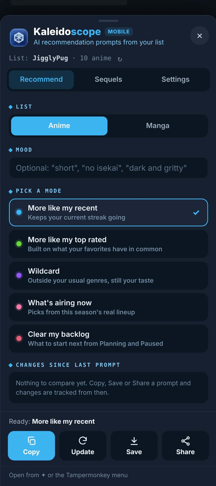
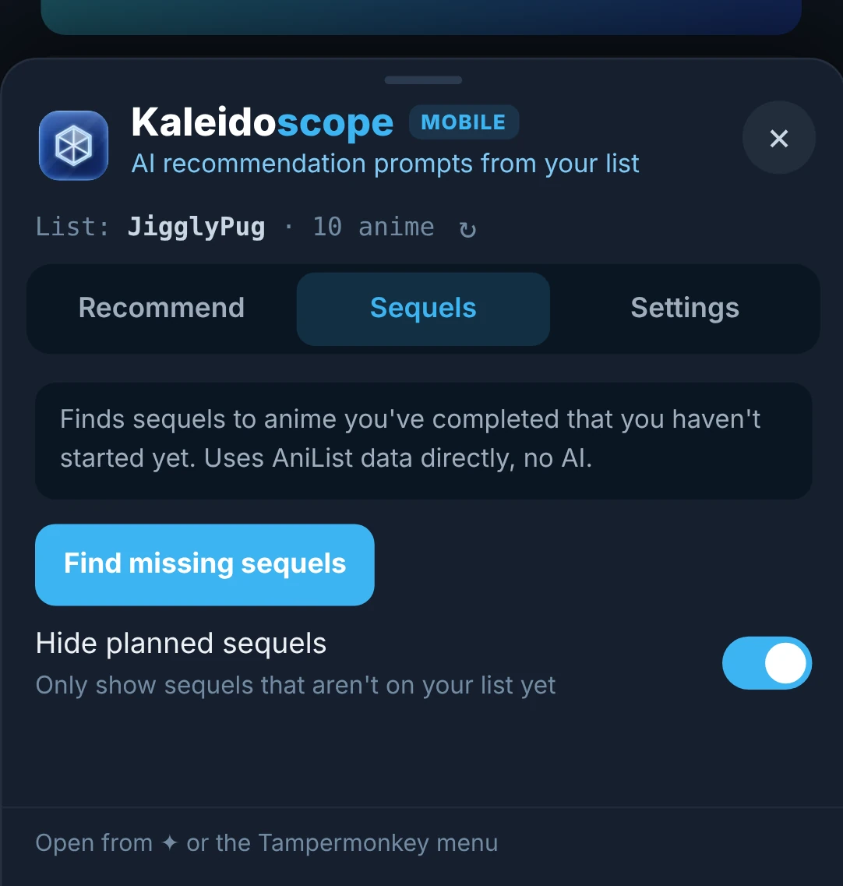
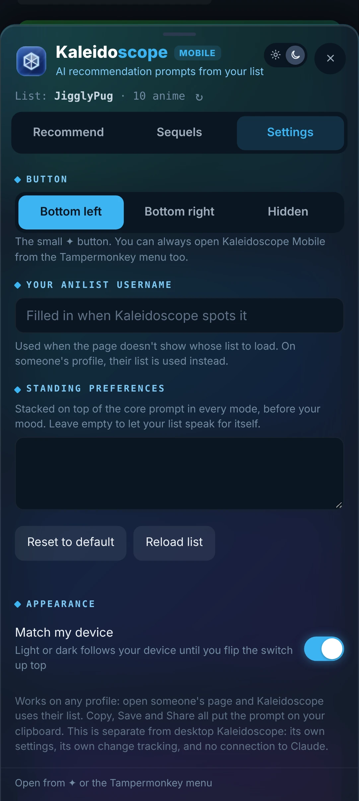

Mobile userscript
Kaleidoscope Mobile
Kaleidoscope, made for your phone.
This is the phone version of Kaleidoscope, built for Edge on Android. It uses the same prompts but has no Claude automation: pick a mode, then Copy, Save or Share the prompt.
anilist.cov1.2.0

Features
The same five modes
Identical prompts to desktop Kaleidoscope, for anime and manga.
Copy, Save or Share
Send the prompt to whatever AI app you use on your phone.
Update prompts
Builds a "what changed since last time" prompt from your list.
Change tracking
See what's new on your list since your last prompt.
Sequel finder
Sequels you haven't started, straight from AniList.
Made for thumbs
A bottom sheet that opens from a small ✦ button or the Tampermonkey menu.
A closer look


More for your phone